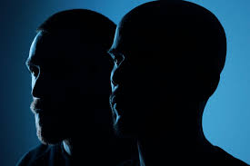
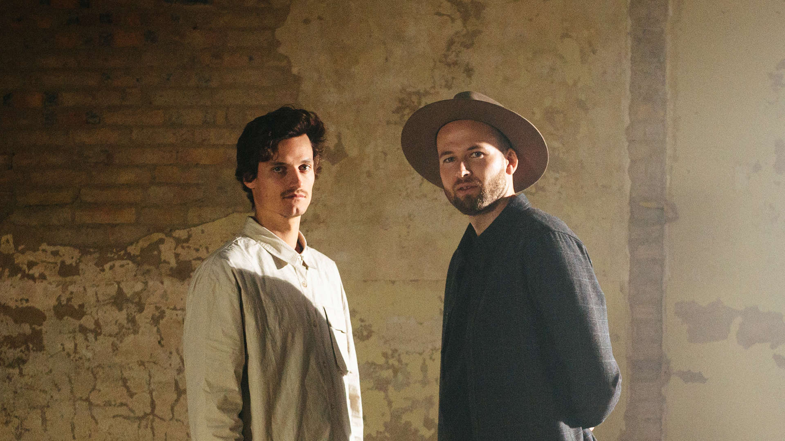

「Featured Artists」
Anyma
Mathame
Tale of us
Mind against

Kas:st

Afterlife Records is an electronic music label established in 2016 by artists Carmine Conte and Matteo Milleri, also known as the duo of Tale Of Us. The record label is known for its melodic techno-beats and dreamy sounds and has worked with artists such as Eric Prydz, ANNA, Mathame, Kevin de Vries and more.
Afterlife realized in 2016, following an extensive 13-week residency at the infamous Space Ibiza club. This residency showcased a precise musical curation and a more experimental, concert-like
approach, featured with DJs by the likes of Nina Kraviz, Dixon, me, Mind Against, and many more. Characterized by mesmerizing soundscapes and lush rhythms, the Afterlife concept quickly made it into the heart of Ibiza
club culture.
Suggested by its beautiful motto, Afterlife sets itself apart with melodic techno-beats and dreamy sounds. This combination creates an attractive and recognizable sound, which has resulted in worldwide attraction. Label
members like Tale Of Us, Mathame and Adriatique perform at the most exclusive clubs and prominent festivals.
Melodic techno is a sub-genre of techno that has a heavy influence of trance music. It often focuses more on melodic progressions than your standard techno. It has a slower tempo than trance,
normally between 120-125 BPM, and softer percussion that draws from minimal techno. Melodic techno is characterized by arpeggiated minor melodies. The chords are usually clean, delicate plucks with long reverb and stereo
delay. These sounds, in turn, are complimented by ambient pads and deep, rolling bass lines.
—Tale of us,the founder of the Afterlife label, once told us that the Afterlife logo means the man that abandons himself to the infinite.
Since its conception, Afterlife has performed hundreds of shows worldwide at locations like Amsterdam, Bucharest, London, Miami and Tulum. These events include the well-known annual Amsterdam Dance Events and Ibiza club
parties. Their shows contain breathtaking visuals and dreamy, minimalistic techno—one notable event: Afterlife x Awakenings in Amsterdam, 2019.
The expectations were high, but Afterlife delivered at a great choice of location: the Gashouder, an old industrial building initially built to store gas inside, now transformed to host significant events. Under rave
veterans, the Gashouder is seen as the techno temple of the Netherlands. Its giant disco ball as a centrepiece creates a unique atmosphere no other venue offers. Afterlife made great use of this by replacing the disco
ball with their signature logo: the upside-down levitating man. Even though it was the first event in Gashouder in collaboration with Afterlife, it all fit perfectly. The music buildups, the light effects, the sharp
synths and the atmosphere all came together to create a night many Afterlife fans will never forget.

Released in April 2020, Unity was the first huge installment on Afterlife. It took the incredible heritage of the Realm of Consciousness series bringing new means to it.
With the pandemic that was spreading at a fast speed all around the world, Unity was and still is, a symbol of togetherness a gateway from this challenging reality. On that specific occasion also, the entire
royalties coming from the compilation have been donated to the Coronavirus medical relief fund of the most heavily-affected region so far, Lombardy in Italy.
Almost a year after the first installment, Tale Of Us and Afterlife return with the second part of Unity compilation, including 25 new exclusive tracks from artists already part of the Afterlife roster as well as
new names on the label.
Unity pt. 2 is an analogy to that union that we all have as human beings even if we do not have the same ideology or language, and we must demonstrate more than ever at this time. Through the 25 songs they show
us that unity is strength by helping other humans and giving a voice to those who have always been underrepresented.
We see that similarity with real life in the genres covered, from hard-hitting techno to the most melodic songs that we can find in Afterlife. Also, the royalties obtained from this album will be used for
donations for medical entities in areas affected by COVID-19. Specifically, Lombardy Italy. .
The album includes thirty-nine tracks by Afterlife artists, as well as three Ukrainian acts: 8Kays, longtime affiliates Woo York, and Angelov, who signed their first track to the label.
Proceeds from the release will benefit two causes near and dear to the label’s heart. UNICEF Ukraine works to reach vulnerable children and families in Ukraine with essential services such as health, education,
protection, water, and sanitation, as well as life-saving supplies. Donations are also being made to Planned Parenthood, a nonprofit organization that is doing everything they can to protect the fundamental right
of people to control their own bodies.
This compilation features the most extensive tracklist to date. Each of the DJs and producers followed the same line within this release on Afterlife, but in any case, each track has sounds and elements that
characterize its author. The compilation opens with 'Cosmovision' by ANNA, a song that anticipates what will be the path of a little more than 4 hours of intense techno. Joining Unity Pt. 3 are Massano with
'Signs of Saturn', Innellea with 'Targo', Agents Of Time with 'Drain', and many more talents.

AFTERLIFE IS CHANGING THE GAME FOR ELECTRONIC MUSIC VISUALS
Afterlife Records places a strong emphasis on creating visually captivating experiences that align with their musical identity. The label incorporates stunning and ethereal visuals that complement the emotive and atmospheric nature of their music. These visuals often feature captivating landscapes, abstract designs, and intricate patterns, creating a multisensory experience for the audience.

Afterlife Records has a significant influence on the techno genre
Afterlife Records has played a pivotal role in shaping the sound of contemporary techno. The label's releases are characterized by a melodic and atmospheric approach to the genre, often incorporating ethereal melodies,
deep basslines, and introspective soundscapes. This distinctive sonic identity has influenced other artists and labels, contributing to the evolution and diversification of techno music.
Thanks for watching